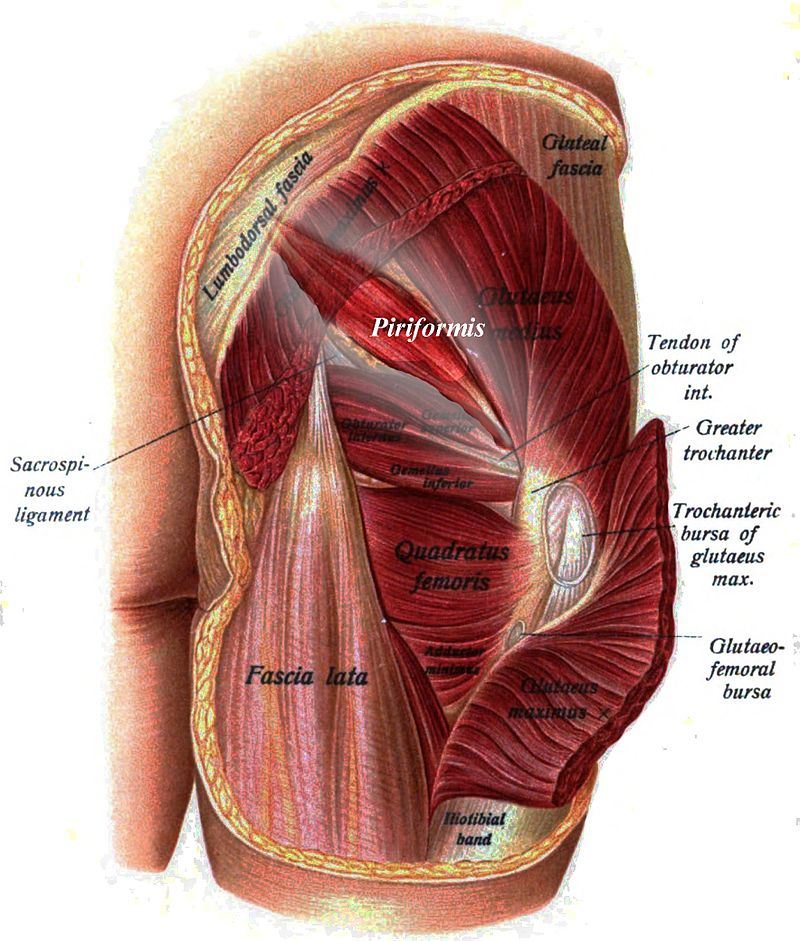
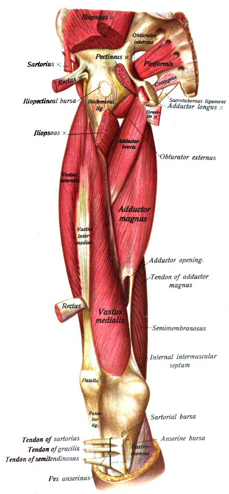

The piriformis (from Latin piriformis, meaning 'pear-shaped') is a muscle in the gluteal region of the lower limbs. It is one of the six muscles in the lateral rotator group. It was first named by Adriaan van den Spiegel, a professor from the University of Padua in the 16th century. https://en.wikipedia.org/wiki/Piriformis_muscle
